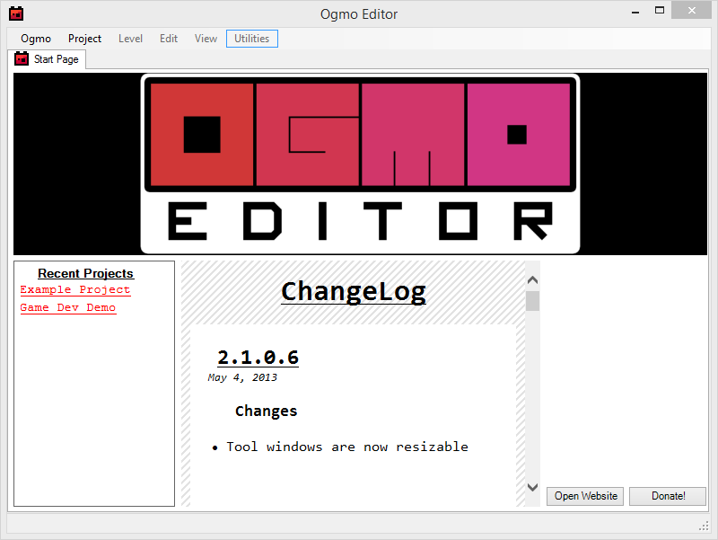
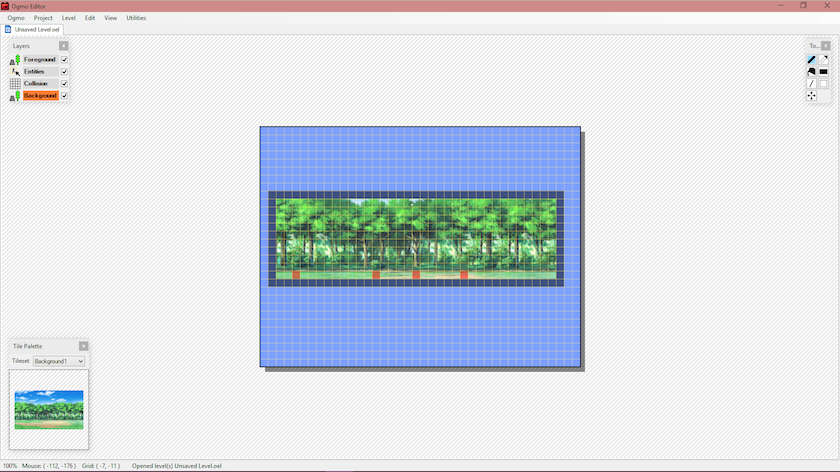

The Ogmo 2D Level Editor
Introduction
Ogmo is an incredibly powerful 2 dimensional level editor. Ogmo can be downloaded from their website. Unfortunately, Ogmo is only available for Windows machines right now. This is a quick tutorial which will quickly cover the basics of designing 2D levels in the Ogmo Editor. The resource used in this tutorial were downloaded from The Sprite Database.
Setting Up
When you launch Ogmo, you will be presented with a screen like the one you see below. From this interface you will be able to quick launch a project you have been working on, open a project, or create a new project. In the bottom left corner of the interface is a section called 'Recent Projects,' which will allow you to quick launch a project you have been working on. To create a new project, select the project drop down menu and select 'New Project'. This will open a new settings window.
Now that we've created a new project, we need to get the environment set up. There are several options that can be adjusted from the settings page when Ogmo opens. We will cover the options for each of the elements for each options page.
Project Settings
-
Project Name
This is the name of your project, and will be used to keep track of levels created under your project. Additionally, this is the name that Ogmo will save your project file to.
-
Background Color and Grid Color
The color of your editor is something that you should play with to get right. The background color is the color that the tiles will be filled with, and the grid color is used to determine the color of the lines seperating the background into a grid. I prefer to leave it at the default blue and yellow.
-
Angle Export
This is a simple flag to determine the units used during the export of the level. This should match how you are developing your game. If you use radians in the games logic, select radians here.
-
Level Size
Using default, minimum, and maximum the level designer allows you to specify the dimensions of the map. These dimensions will affect the amount of editable space when using the editor, and will be included in the level file by name. The default level size will apply when a new level is created in the editor. If you have a single size for all of your levels, then these three sizes can be the same.
-
Camera
The camera option allows the developer to simulate using a camera in the editor. If you would like to include the camera movement as a component of the XML document, select "Export Camera Position."
-
Level Values
Level values are attributes attached to the level. These can be useful for storing information about how the level is supposed to be played. For example, if each level had a time limit then that could be stored in the level values. In this tutorial, there will be only one level value: Diff. Diff is a integer value representing the difficulty of the level. This will allow us to programatically sort the levels by difficulty, or let a user select a difficulty from an option list. Values can have one of six types: Integer, Boolean, Float, String, Enum, and Color.
Layers
Layers are a way of organizing the different components of your game. Each layer has several attributes: Name, Grid, and Type. The name field is the name of the layer, and is used for the developers sake. The grid field determines the size of the layer. This will break up the given space into a grid of AxB.
A layer can have one of three types: Grid, Tiles, or Entities. A Grid type is a series of booleans representing the state of the grid. Each cell in the layer can either be filled or empty. This is most useful when detecting collision. This layer will be used to determine whether an entity can move to a given grid position. The Entities layer allows the user to specify positions that can be referenced for the spawning and destruction of entitites. This layer is where players will be spawned, rendered, and destroyed. In the example, we will be placing a player spawn, and then three enemy spawns. Lastly, the Tiles layer allows sprites to be included in the level. These are the layers where you will include background and forground images. When complete, you should have something similar to the image below.
This tutorial will skip over adding resources to the tilesets and entitites. However, if you have a tiles or entities layer you MUST have at least one resource in the respective settings tab.
The Editor... Finally!
Thankfully, once we've got all of the configured and ready to go. This is where the level design comes in. In the upper left corner, you can see the layer selector. Using this interface you can hide (uncheck), or select (click) a layer to edit. As you change the layers from grids, tiles, and entitites the palette in the lower left corner changes to display the resources available for that layer. Lastly, the upper right corner of the screen houses the toolbar for the editor. From here you can select several types tools to help you shape the level to better suit your needs.
The controls for this interface are simple and intuitive! If you want to select something, simply left click it. If you want to empty a cell, you can right click it! When selecting a tiles level, you must choose the section of the tile to show. To do this, left click in the Tile Palette on the image. Then drag the mouse to highlight the area of the image you want to include. Then you can add the selected section to the grid by left clicking on a tile on the screen. This will populate (down and to the right) the grid from that square.
This has been a short introduction to the Ogmo 2D level editor. I have covered only the surface of the possibilities that the Ogmo Editor provides. Good luck, and enjoy working with this editor!
